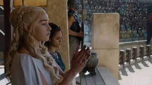

Merhaba.Benim adım Hasan Yılmaz.Giresunda yaşıyorum.Sosyal medyada gezinmeyi çok seviyorum. Web geliştirme,Asp.net ile ilgileniyorum. Kpss'ye hazırlanıyorum. Html ve Javascriptte kendimi geliştirme uğraşıyorum.Gerçekten Harika
League of Legends oynamayı severim. Gerçekten Harika bi oyun :)
Game Of Thrones
Yazların onlarca yıl, kışların ise bir ömür sürebildiği bir diyar, içten içe nifakla kaynamaktadır. Köklerini saldıkları topraklar kadar soğuk ve sert olan Starklar'ın kalesi Kıştepesi'nin kuzeyinde, Yedi Krallık'ı koruyan Sur'un ardında tekinsiz güçler toplanmaktadır. Kuşkulu bir ölümün ardından kralı ve dostu tarafından saltanat makamı olan güneye çağrılan Eddard Stark kendisini Demir Taht'ı arzulayanların baş döndürücü entrikalarının arasında bulur. Dostuyla düşmanını, gerçekle yalanı ayırt edemez olan Eddard'ın ne kıyısında yürüdüğü uçurumdan, ne de Ejderkrallar'ın soyundan gelen sürgün Targaryen kardeşlerin taştan ejder yumurtaları ve soylu atların sırtında serpilen iktidar düşlerinden haberi vardır. Kış, Starklar ve yandaşları için olduğu kadar Yedi Krallık için de uğursuz alametlerle gelmektedir. Taht mücadeleleri her zamankinden daha sert geçecektir.